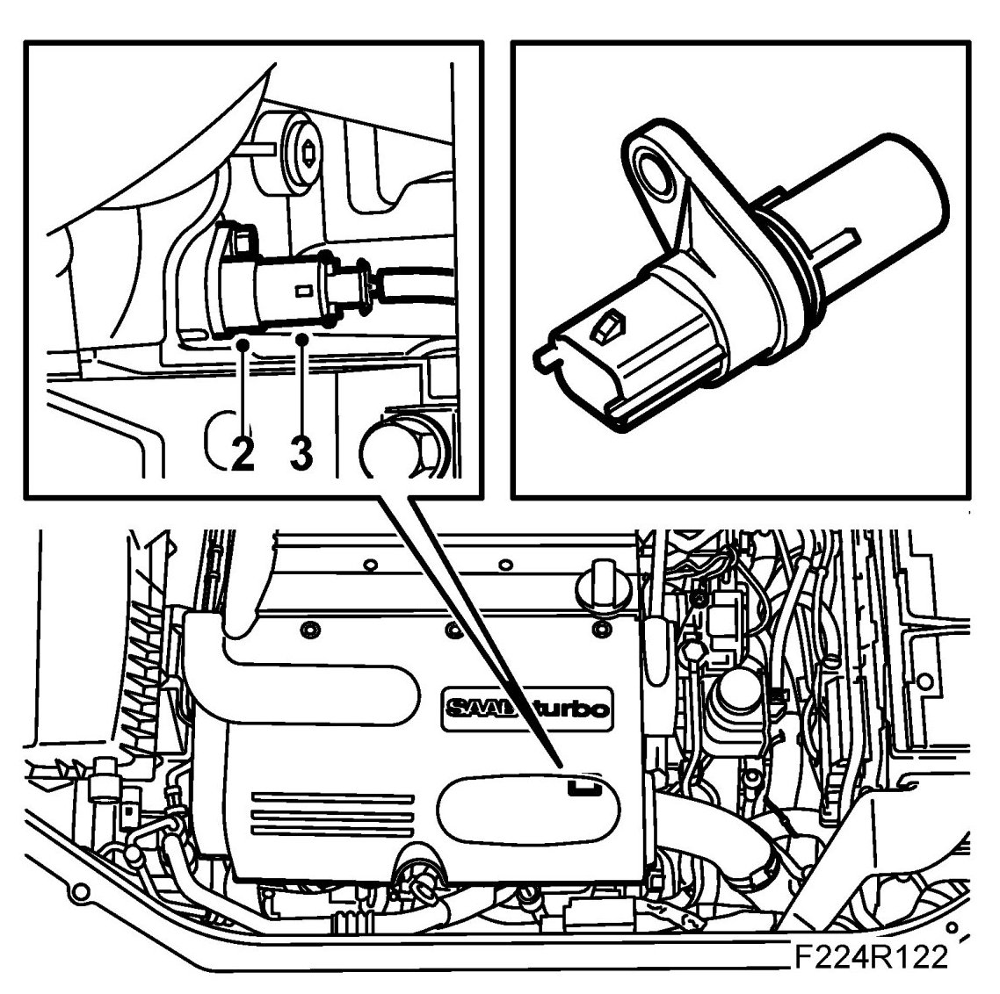
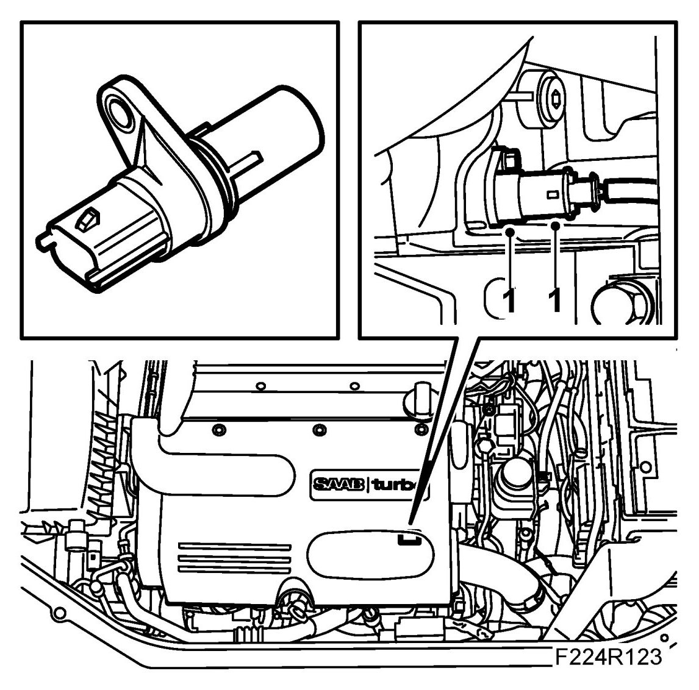

Crankshaft Position Sensor (345)
Crankshaft Position Sensor (345)
To remove
1. Remove the upper engine cover.

2. Remove the crankshaft position sensor.
3. Unplug the crankshaft position sensor connector.
To fit
1. Plug in the connector and fit the crankshaft position sensor with a new O-ring sparingly lubricated with Vaseline.

2. Fit the upper engine cover.